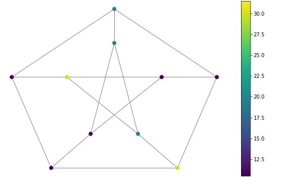
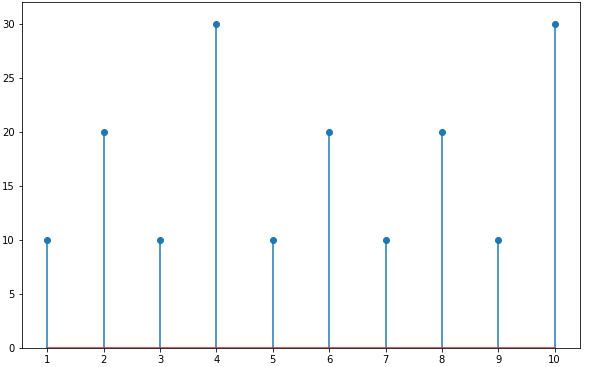
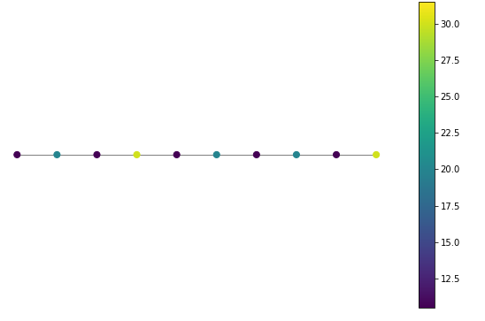

Graph Signal Processing
1 - Graph Signals
Graph Signal Processing
Classical Signal Processing
A graph is defined as $$\mathcal{G} = \{ \mathcal{V}, \mathcal{E}, W\} $$
- $\mathcal{V}$: Set of vertices
- $\mathcal{E}$: Set of edges, where an edge is defined as $e=(i,j)$, which connects vertices $i$ and $j$
- $W$: Adjacency matrix $$ W_{i,j} = \begin{cases} 0 & \text{if $i=j$ (no self-loop is assumed)}\\ \text{edge weight of $(i,j)$} & \text{if $i\neq j$ and $v_i$, $v_j$ are connected} \\ 0 & \text{o.w.} \end{cases} $$
A graph signal is defined as $$f : \mathcal{V} \rightarrow \mathbb{R}$$ $$\textbf{f} \in \mathbb{R}^N$$ with a graph $\mathcal{G} = \{ \mathcal{V}, \mathcal{E}, W\} $
Exp:
Petersen Graph
Petersen Graph Signal
Vertex Indices
A finite-length signal is defined as $$f : \mathbb{Z} \rightarrow \mathbb{R}$$ $$\textbf{f} \in \mathbb{R}^N$$ with a graph $\mathcal{G} = \{ \mathcal{V}, \mathcal{E}, W\}$ with $W_{i,j} = 1$ if $i=j+1$ or $ i+1=j$, otherwise it's equal to $0$.
So, a finite-length signal can be seen as a graph signal where the graph is a line with the same edge weight that represents the regularly spaced vertices.
Exp:
Regularly Sized Graph
Finite Length DT Signal
Vertex Indices